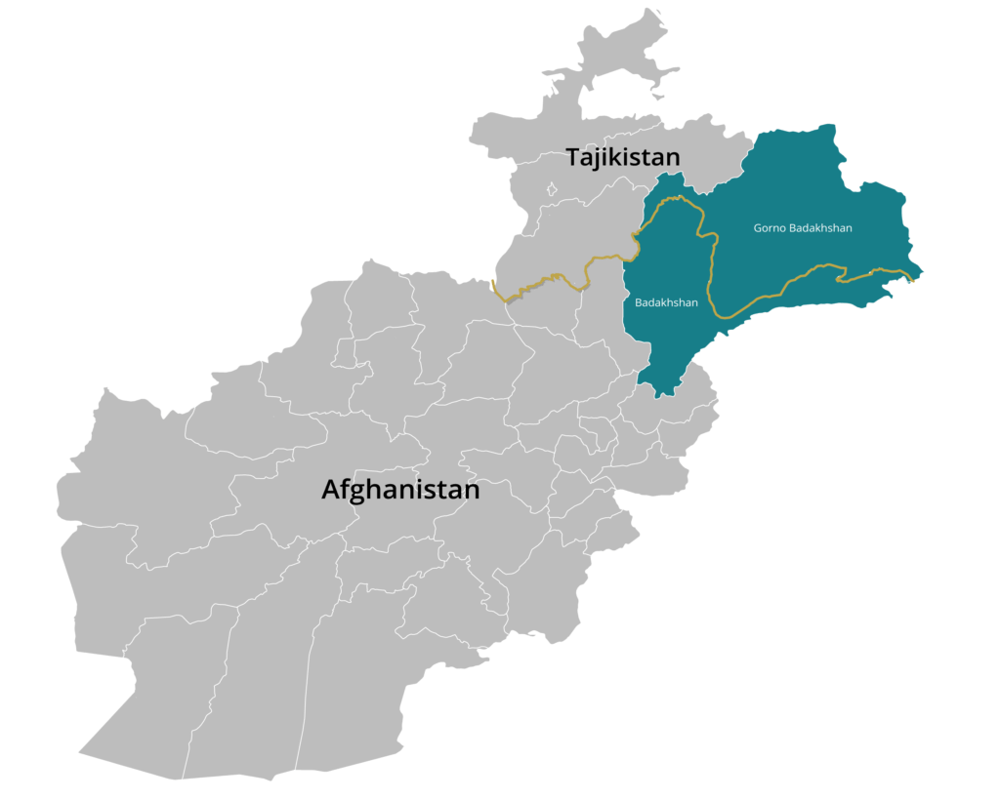

Pamiri languages are a group of Eastern Iranian languages spoken in the Pamir region of Tajikistan and Afghanistan. Learning basic phrases will help you connect with Pamiri people and understand their rich linguistic heritage.
The Pamiri languages include several dialects such as Wakhi, Shughni, and Munji. Each dialect has unique phrases and sounds, making it a fascinating field of study for linguists and language enthusiasts.
The Pamir languages are a group of Eastern Iranian languages spoken primarily by the Pamiri people in the Pamir Mountains, especially in Tajikistan and Afghanistan, along the Panj River and its tributaries.
Pamir languages are spoken in the Badakhshan Province of Afghanistan, Gorno-Badakhshan Autonomous Region in Tajikistan, parts of Xinjiang in China, and northern Pakistan (Chitral and Gojal).
The Pamir languages belong to the Indo-Iranian branch of the Indo-European family. While they are classified as Eastern Iranian, no common ancestor has been confirmed to unite these languages.
The Vanji language, once spoken in the Vanj river valley, became extinct in the 19th century after assimilation into the Bukharan Emirate. In the past, the Pamir languages were collectively called "Ghalchah languages," a term no longer in use.
Pamir languages are endangered, with around 100,000 speakers. Most speakers in Tajikistan and Afghanistan also use Tajik Persian as a literary language.
Ivan Ivanovich Zarubin, a Soviet linguist, made significant contributions to the study of Pamir languages. Ongoing research is also being done to preserve these languages.
These languages feature subject-object-verb sentence structure and are important cultural markers for the Pamiri people.
1. Greeting in Shughni: Carang
Explanation: "Carang" is a common greeting in the Shughni language.
2. What does "Uzum tu zhiwj" mean? I love you
Explanation: "Uzum tu zhiwj" translates to "I love you" in Shughni.
3. Where is Shughni spoken? Shughnan/Badakhshan
Explanation: Shughni is mainly spoken in the Shughnan and Badakhshan regions.
4. How to say "great/good"? Zur
Explanation: "Zur" is used to describe something great or good in Shughni.
5. How to say "bad"? Ganda
Explanation: "Ganda" means bad or unpleasant in Shughni.
6. How to say "Thank you"? Kullugh
Explanation: "Kullugh" is used to say "thank you" in Shughni.